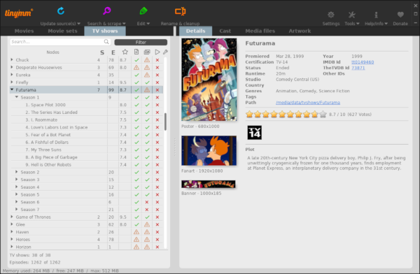

Si tienes un servidor multimedia como Jellyfin o Plex, en muchas ocasiones, es probable que la información de tus películas o series, no aparezcan correctamente. No estaría mal el ayudar a tu servidor con esta dura tarea de indexar tus archivos.
Para ello, vamos a instalar una aplicación como Tiny Media Manager.

Tiny Media Manager nos va a renombrar, modificar correctamente los metadatos y descargar portadas de nuestro contenido multimedia.
La había probado hace muchísimo tiempo, pero no hace mucho, me la recomendó nuevamente Carlos del Blog de Lazaro.
Tiny Media Manager, está desarrollado en Java, así que es necesario instalar JDK u OpenJDK, si tu distro no lo trae instalado. Es probable que tu distro traiga una versión incluso mas actualizada.
sudo apt install openjdk-8-jdk
sudo apt install libmediainfo
Tan sencillo como ir a la página oficial de TiniMediaManager y descargar el archivo comprimido, em mi caso, para linux.
Una vez descargado, descomprimimos el contenido del archivo en una carpeta, accederemos al interior de esta y ejecutaremos el script que encontraremos llamado: tinyMediaManagerUpdater.sh
./tinyMediaManagerUpdater.sh
Gracias una vez más al trabajo de Román Martín, ha creado este contenedor de Tiny Media Manager para arquitectura 64bits, donde nos vamos a evitar todo el tedioso proceso del apartado anterior y podremos montar este contenedor, que nos permitirá acceder a Tiny Media Manager desde nuestro navegador web. Esto nos va a permitir tanto en nuestro PC local, así como si tenemos un servidor, el poder utilizar esta aplicación remotamente.
docker run -d --name=tinymediamanager \
-v $HOME/tinymediamanager/config:/config \
-v $HOME/docker/media:/media \
-e GROUP_ID=0 -e USER_ID=0 -e TZ=Europe/Madrid \
-p 5800:5800 \
-p 5900:5900 \
romancin/tinymediamanager:latest
Una vez montado el contenedor, accederemos en este caso a la ip:5800
La verdad es que esta aplicación es de todo, menos amigable. Gracias a Mc Josan del Blog de NASeros (os recomiendo totalmente su blog y Canal de vídeos en youtube), que hace unos vídeos muy pero que muy bien explicados, nos dejó esta explicación de su uso, que aunque la versión que explica, es una versión anterior de Tiny Media Manager, su uso es exactamente el mismo.
Publicado por Angel el Wednesday 27 November del 2019
También te puede interesar:
Powered by org-bash-blog
Written in OrgMode with Emacs and converted to HTML with Pandoc

Este obra está bajo una licencia de Creative Commons Reconocimiento-NoComercial-CompartirIgual 4.0 Internacional.